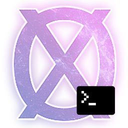

OnexExplorer

OnexExplorerCli
OnexExplorerCli is an open-source command-line tool for unpacking and repacking .NOS data files from the game NosTale. It is based on the original OnexExplorer GUI application. Huge thanks to Pumba98 for his work.
Features
- List entries — display the entry table of any .NOS archive with type, size, and compression info; JSON output via
--json - Show entry details — detailed information about individual entries; JSON output via
--json - Extract entries — decompress/decrypt entries to disk; images are auto-converted to PNG
- Download from CDN — fetch .NOS archives directly from the Gameforge CDN with SHA1 verification
Supported .NOS file formats
| Archive name | Description |
|---|---|
| NSgtdData | Items, quests, skills, mobs etc. data |
| NSlangData | _code_lang_list (ztsXXXe) |
| NScliData | constring.dat |
| NSetcData | Word list for Memory & TabooStr.lst |
| NS4BbData | Big images |
| NSipData | Icons |
| NStpData | Map and model textures |
| NStpeData | Effect textures |
| NStpuData | UI textures |
| NStcData | Map grids |
Unsupported or partially supported .NOS file formats
The following archives are not yet supported:
| Archive name | Description |
|---|---|
| NSmpData | Monster-related sprites |
| NSppData | Player-related sprites |
| NSmnData | Mob-related sprite infos |
| NSpnData | Player-related sprite infos |
| NSmcData | Monster-related animation kits |
| NSpcData | Player-related animation kits |
| NStgData | 3D Models |
| NStgeData | 3D VFX models |
| NStuData | Map configs |
| NSeffData | VFX configs |
| NStsData | — |
| NStkData | — |
| NSemData | — |
| NSesData | — |
| NSedData | — |
| NSgrdData | — |
| NSpmData | — |
How to use it
Commands
OnexExplorerCli download [-o <output-dir>] [--build-id <id>] [--all] <archive-names...> OnexExplorerCli extract <file> -o <output-dir> [--entry <ids...>] OnexExplorerCli list <file> [--json] OnexExplorerCli info <file> [--entry <ids...>] [--json]
Global options
| Option | Description |
|---|---|
-h, --help | Print help message and exit |
-v, --version | Print the version number and exit |
download — fetch archives from the Gameforge CDN
Fetches .NOS archive files from the Gameforge CDN. Downloads the patch manifest, resolves each archive name against it, and streams the file to disk with SHA1 verification.
| Option | Description |
|---|---|
-o, --output <dir> | Target directory for downloaded files (required) |
--build-id <id> | Build version to fetch from (default: latest) |
--all | Download all archives in the manifest |
archive-names... | One or more archive names from the manifest |
Resolution tries an exact file-field match first, then falls back to a bare filename match. An error is reported if a name matches more than one manifest entry. Files already present on disk with a matching SHA1 are skipped.
Examples:
# Download specific archives OnexExplorerCli download -o ./downloads NSipData.NOS NostaleData\\NSipData.NOS # Download all archives from a specific build OnexExplorerCli download -o ./downloads --build-id 12345 --all
extract — extract entries from a .NOS archive
Reads a .NOS archive and extracts entries to disk. Image entries (Texture, Icon, Image4B, TileGrid) are automatically converted to PNG.
| Option | Description |
|---|---|
file | Path to the .NOS file (required) |
-o, --output <dir> | Output directory (required) |
--entry <ids...> | Entry IDs to extract (repeatable; default: all) |
Examples:
# Extract all entries OnexExplorerCli extract path/to/file.NOS -o ./output # Extract specific entries by ID OnexExplorerCli extract path/to/file.NOS -o ./output --entry 0 1 2
list — list entries in a .NOS archive
Displays the entry table of a .NOS archive: ID, name, type, compression status, and sizes.
| Option | Description |
|---|---|
file | Path to the .NOS file (required) |
--json | Output as a JSON array (pipeable) |
Examples:
# Human-readable table OnexExplorerCli list path/to/file.NOS # JSON output (pipeable) OnexExplorerCli list path/to/file.NOS --json | jq '.[] | select(.type == "Icon")'
info — show entry details
Displays detailed information about entries in a .NOS archive: ID, name, type, creation date, compression, file offsets, and sizes.
| Option | Description |
|---|---|
file | Path to the .NOS file (required) |
--entry <ids...> | Entry IDs to inspect (repeatable; default: all) |
--json | Output as JSON (single entry or array for multiple) |
Examples:
# Show all entries OnexExplorerCli info path/to/file.NOS # Show specific entries OnexExplorerCli info path/to/file.NOS --entry 0 1 2 # JSON output for a single entry OnexExplorerCli info path/to/file.NOS --entry 0 --json
Build and run
Build and run the standalone CLI
cmake -S standalone -B build/standalone cmake --build build/standalone ./build/standalone/OnexExplorerCli --help
Build and run the test suite
cmake -S test -B build/test cmake --build build/test CTEST_OUTPUT_ON_FAILURE=1 cmake --build build/test --target test # or run the test executable directly: ./build/test/OnexExplorerTests
To collect code coverage information, run CMake with the -DENABLE_TEST_COVERAGE=1 option.
Run clang-format
cmake -S test -B build/test # view changes cmake --build build/test --target format # apply changes cmake --build build/test --target fix-format
See Format.cmake for details. Dependencies can be installed via pip:
pip install clang-format==14.0.6 cmake_format==0.6.11 pyyaml
Build the documentation
The documentation is automatically built and published whenever a GitHub Release is created. To manually build documentation:
cmake -S documentation -B build/doc cmake --build build/doc --target GenerateDocs # view the docs open build/doc/doxygen/html/index.html
You will need Doxygen, jinja2 and Pygments installed on your system.
Build everything at once
cmake -S all -B build cmake --build build # run tests ./build/test/OnexExplorerTests # format code cmake --build build --target fix-format # run standalone ./build/standalone/OnexExplorerCli --help # build docs cmake --build build --target GenerateDocs
FAQ
VS Code / clangd shows "file not found" errors for project headers
After building, generate a compile_commands.json and symlink it to the project root so clangd can resolve include paths:
cmake -S standalone -B build/standalone -DCMAKE_EXPORT_COMPILE_COMMANDS=ON ln -sf build/standalone/compile_commands.json compile_commands.json
Then restart clangd in VS Code (Ctrl+Shift+P → "clangd: Restart").
If using the all build, point to that instead:
cmake -S all -B build -DCMAKE_EXPORT_COMPILE_COMMANDS=ON ln -sf build/compile_commands.json compile_commands.json
Related projects and alternatives
- OnexExplorer: Original Qt GUI application where most of the work was made.